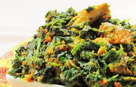

Vegetable Soup

Descripton
Vegetable soup is a traditional Nigerian soup that is highly nutritious
and protein-packed. This finger-licking delicacy is also commonly known as
Edikang Ikong Soup.
Edikang Ikong is a soup that is native to the
Efik people from the Cross River, and Akwa Ibom states in Nigeria. This
delicious soup tastes so good and has a load of health benefits.
Ingredients
- Vegetables (Ugwu)
- Waterleaf
- Grounded Pepper
- Onion
- Seasoning cubes
- Crayfish
- Goat meat
- Dried fish
- Palm oil
- Goat meat broth
- Salt
Steps to make Vegetable-soup
Prepare the Goat Meat
-
First, wash and cut the goat meat into small pieces or your preferred
size (if not already cut).
- Put it into a pot and pour just enough water to cover it.
-
Add the chopped onions, bouillon or Maggi cubes, salt, and pepper.
- Boil till soft (about 40-45 minutes should be enough
- Take out the meat and leave the stock in the pot for the soup.
Prepare the leaves
- While the goat meat is cooking, wash and drain the leaves.
-
Leave in a colander to get rid of excess water,then cut leaves while you
prepare the soup.
Prepare the soup
-
Edikang Ikong is not a watery soup so add just a little water to the
stock in the pot.
-
Add the Dried fish, goat meat & spices. Boil for 15 - 20 minutes on
medium heat.
- Add the waterleaf and ugu leaves. Stir and taste for salt.
-
Pour in the palm oil. Simmer for 10 mins on low heat. The soup is ready
to be served.